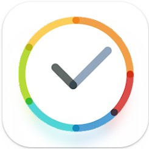

StayFree: Controla Tu Tiempo en el Teléfono Móvil
Por: Sergio S.R
Fecha de Publicación: 30 de septiembre de 2023

StayFree
En un mundo cada vez más digitalizado, donde los dispositivos móviles se han convertido en una parte esencial de nuestra vida diaria, la gestión del tiempo en nuestros smartphones se ha vuelto crucial. La aplicación StayFree se presenta como una solución que ayuda a los usuarios a controlar y reducir su tiempo de pantalla, permitiéndoles tomar el control de su relación con la tecnología.
StayFree es una aplicación diseñada para brindar a los usuarios una visión clara y detallada de su uso de aplicaciones y dispositivos móviles. Ofrece un enfoque proactivo para combatir la adicción al teléfono y promover un uso más consciente de los dispositivos móviles. A continuación, evaluamos los aspectos clave de la aplicación:
Aspectos Positivos
Ayuda a Superar la Adicción al Celular
Varios usuarios han informado que StayFree les ha ayudado a superar su adicción al teléfono. La aplicación actúa como un recordatorio constante del tiempo que pasamos en nuestras aplicaciones, lo que puede ser una llamada de atención necesaria para reducir el uso excesivo del dispositivo.
Registros Detallados
StayFree proporciona un desglose detallado del tiempo de uso de cada aplicación, lo que permite a los usuarios identificar fácilmente sus patrones de uso. Esta información detallada es esencial para tomar decisiones informadas sobre cómo administrar el tiempo en el teléfono.
Motivación a Través de Puntos
La aplicación utiliza un sistema de puntos para recompensar a los usuarios por sus logros en la reducción del tiempo de pantalla. Esto puede ser una fuente de motivación adicional para aquellos que buscan reducir su tiempo en aplicaciones específicas.
Aspectos Negativos
Problemas de Bloqueo de Aplicaciones
Algunos usuarios han experimentado problemas con el bloqueo de aplicaciones, informando que StayFree no bloquea aplicaciones correctamente según la configuración.
Inexactitudes en los Registros de Tiempo
Ha habido casos en los que la aplicación ha exagerado los tiempos de uso de aplicaciones, lo que ha llevado a notificaciones incorrectas sobre el tiempo de pantalla.
Personalización Limitada
Algunos usuarios desearían una mayor capacidad de personalización en el modo de enfoque para aplicaciones específicas.